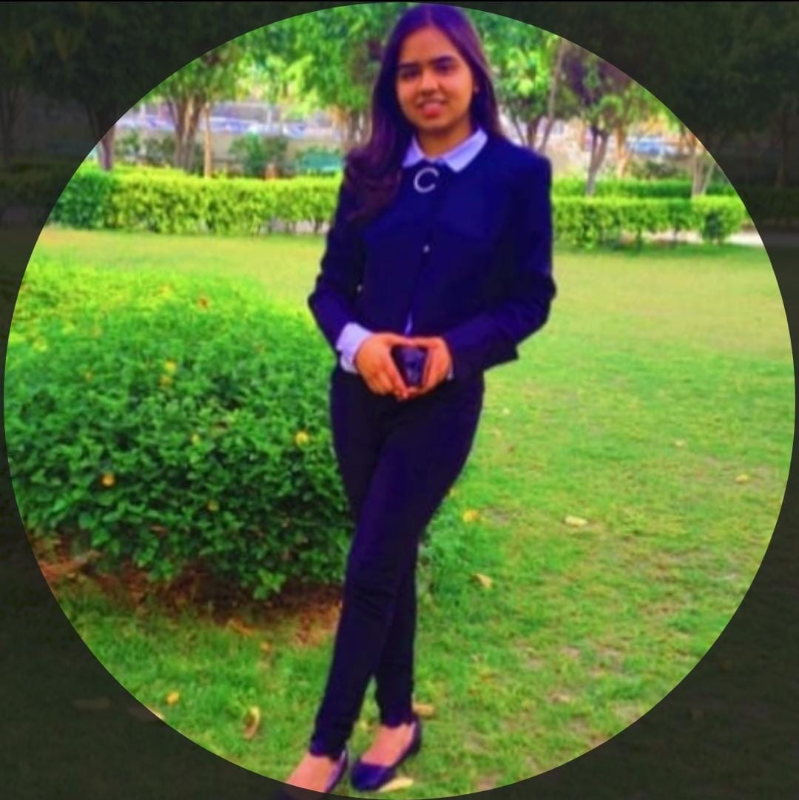

EDUCATION
I did my schooling from ST.MARY SENIOR SECONDARY SCHOOL,MORADABAD.
St.Mary's is a Christian girls school and one of the most famous schools in Moradabad.
The school is not just big and beautiful but also has excellent staff and faculty members who support the students and help them in making their future brighter.
Currently,I am pursuing my B.E/BTECH in computer science and engineering from Chandigarh University.
Chandigarh University,besides its marvellous campus provides many courses in various branches to the students studying and it also provides the students to participate in various activites.